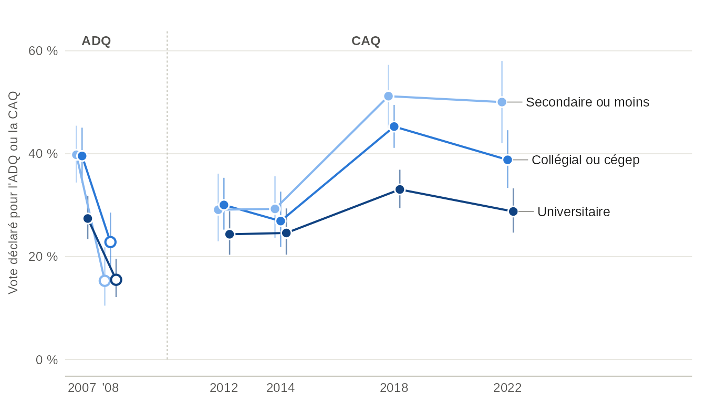
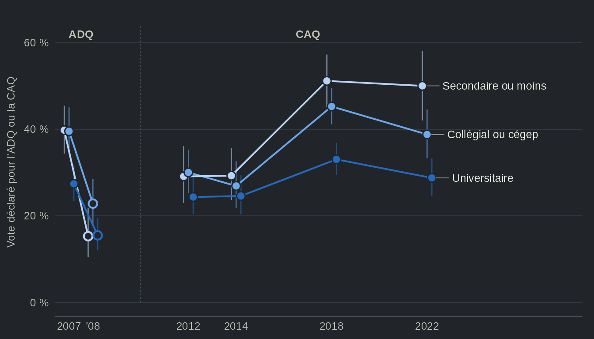

Un seul fichier pour toutes les études : qes_decon()
Source:vignettes/articles/fr-decon.Rmd
fr-decon.RmdCette page télécharge 11 études (environ 16 Mo) la
première fois qu’elle s’exécute.
options(qesR.cache = "disk") les garde sur le disque pour
les sessions suivantes.
Depuis quelques années, l’Étude électorale canadienne dispose d’une
porte d’entrée simple. La fonction get_decon() du package
cesR renvoie un seul
tableau de l’étude de 2019, avec 21 variables aux noms simples
(education, income_cat, lr,
econ_retro…) et aux étiquettes lisibles. Les Études
électorales québécoises n’avaient pas d’équivalent. Leur harmonisation
dans qesR, qes_harmonize(), est stricte par construction :
une cible par question, un niveau de comparabilité pour la question de
chaque étude et un motif pour chaque valeur manquante. C’est le bon
outil lorsque la différence entre deux questions compte. Or, bien des
usages n’en demandent pas tant : un tableau descriptif, une variable de
contrôle, un premier regard sur 25 ans de données.
qes_decon() répond à ce besoin. La fonction renvoie un seul
tableau pour les 11 études harmonisées, avec 47 038 lignes (une par
personne et par vague) et 35 colonnes de données, une par concept, même
lorsque le libellé ou les choix de réponse changent d’une étude à
l’autre. Le prix à payer est l’exactitude. Les catégories sont larges,
et aucune colonne ne prétend que deux études ont posé la même
question.
Ce que contient le fichier
d <- qes_decon(lang = "fr")lang = "fr" donne les étiquettes en français ; les noms
de colonnes ne changent pas. Les premières lignes :
d[1:4, c("study", "wave", "weight", "gender", "education", "vote_choice", "vote_type")]
#> study wave weight gender education vote_choice
#> 1 qes2022 cps 1.4628887 Homme Sans diplôme d'études secondaires CAQ
#> 2 qes2022 pes 1.4407098 Homme Sans diplôme d'études secondaires CAQ
#> 3 qes2022 cps 0.1474534 Homme Université QS
#> 4 qes2022 cps 0.4824134 Homme Université <NA>
#> vote_type
#> 1 Intention de vote (indécis relancés)
#> 2 Vote déclaré (après l'élection)
#> 3 Intention de vote (indécis relancés)
#> 4 Intention de vote (indécis relancés)Les premières colonnes identifient la ligne : study,
year, wave et qes_id,
l’identifiant de la personne dans l’étude. Le fichier compte 40 986
répondants, et une personne interrogée par un panel a une ligne par
vague. Les colonnes sociodémographiques (scolarité, revenu, langue,
religion, région…) se répètent sur chaque ligne d’une personne, alors
que le vote, la participation et les attitudes se trouvent sur la ligne
de la vague qui les a mesurés : l’intention de vote sur la vague de
campagne, le vote déclaré sur la vague postélectorale.
weight est la pondération recommandée de l’étude et de la
vague, ramenée à une moyenne de 1 dans chacune, et
weight_var en donne la variable source. Sur les 11 études,
6 ont une telle pondération sur chaque ligne : EEQ 2007, EEQ 2012, EEQ
2014, EEQ 2018, Panel 2018 et EEQ 2022. Les autres ont NA.
L’EEQ 2008 n’a pas de pondération recommandée, puisque ses pondérations
sont calées sur le vote déclaré, et les pondérations des études
suivantes ne sont pas validées : Sondages de 1998, Panel 2007, Sondages
CROP et Panel 2012. attr(d, "weights") donne le détail,
vague par vague, et le tableau des
pondérations décrit la pondération de chaque étude.
Les colonnes
Le tableau ci-dessous est généré à partir de la spécification souple
livrée avec qesR (qes_spec("relaxed")). Une étude est
comptée lorsque la colonne y a au moins une valeur. Chaque nom renvoie à
la section de la colonne dans la référence des variables, qui
donne la variable source et la règle de recodage de chaque étude.
| Colonne | Concept | Catégories | Études | Comment elle a été assouplie |
|---|---|---|---|---|
citizenship |
Citoyenneté | Citoyen(ne) canadien(ne) · Pas citoyen(ne) canadien(ne) | 2 (panel 2018, 2022) | La citoyenneté canadienne là où une étude l’a enregistrée : posée directement en 2022, et tirée dans le panel de 2018 de la question de sélection sur le droit de voter à l’élection québécoise à venir, si bien que tous les répondants de ce panel sont citoyens. |
yob |
Année de naissance | nombre, 1900-2010 | 6 (2007, 2008, 2012, 2014, 2018, 2022) | L’année de naissance déclarée ; les études qui n’ont demandé qu’un groupe d’âge n’en ont pas (voir age_group). |
age_group |
Groupe d’âge | 18-34 · 35-54 · 55 et plus | les 11 | Trois groupes d’âge (18-34, 35-54, 55 et plus), tirés des tranches d’âge de l’étude ou de l’âge au début du terrain ; les moins de 18 ans sont manquants. |
gender |
Genre | Homme · Femme · Non binaire · Un autre genre | les 11 | Le genre ou le sexe tel que chaque étude l’a demandé : homme ou femme partout, et en 2022 aussi non binaire ou un autre genre ; les questions diffèrent, pas les catégories. |
education4 |
Scolarité (quatre groupes) | Sans diplôme d’études secondaires · Diplôme d’études secondaires · Collégial, cégep ou formation professionnelle · Universitaire | 9 (2007, panel 2007, 2008, CROP, 2012, 2014, 2018, panel 2018, 2022) | Les niveaux de chaque étude sont regroupés en quatre : sans diplôme d’études secondaires, secondaire, collégial (cégep, formation technique ou professionnelle) et universitaire, y compris des études universitaires non terminées ; le panel de 2007 et les sondages CROP ont demandé les années d’études, si bien que leur groupe secondaire compte aussi ceux qui ont quitté le secondaire sans diplôme, et leur groupe collégial peut compter des personnes ayant fait des études universitaires sans diplôme. qes1998 est manquante (non appariable) : le groupe du milieu de son fichier regroupé, 10 à 15 années d’études, chevauche le secondaire et le collégial (education, en trois groupes, l’inclut). La cible stricte du même nom dans qes_harmonize() regroupe autrement : son groupe le plus bas est primaire ou moins. |
education |
Scolarité | Sans diplôme d’études secondaires · Secondaire au collégial (cégep) · Université | 10 (1998, 2007, panel 2007, 2008, CROP, 2012, 2014, 2018, panel 2018, 2022) | Les niveaux de chaque étude sont regroupés en trois : sans diplôme d’études secondaires, secondaire au collégial (diplôme d’études secondaires, cégep, formation technique ou professionnelle) et université, y compris des études universitaires non terminées. Ce sont les groupes de education4, secondaire et collégial réunis, ce qui permet d’inclure qes1998. Là où une étude a demandé les années d’études (le panel de 2007, les sondages CROP et les répondants de CROP dans qes1998), les tranches ne suivent pas les diplômes : des personnes sans diplôme (10 ans dans qes1998 ; 8 à 10 ans dans les autres, puisque le secondaire se termine après 11 ans au Québec) sont classées au secondaire au collégial, et des étudiants universitaires (14 ou 15 ans) ne sont pas classés à l’université. |
income_cat |
Revenu du ménage (tiers) | Faible (tiers inférieur) · Moyen · Élevé (tiers supérieur) | 9 (2007, panel 2007, 2008, CROP, 2012, 2014, 2018, panel 2018, 2022) | Le revenu du ménage en tiers des répondants de chaque étude : les tranches de revenu ne sont jamais coupées, si bien qu’un tiers réunit les tranches entières dont le point milieu y tombe et compte rarement exactement un tiers ; les seuils en dollars diffèrent d’une étude à l’autre. |
language |
Langue maternelle | Français · Anglais · Autre | les 11 | La langue apprise en premier dans l’enfance, en trois groupes ; une personne qui déclare le français et une autre langue est classée au français, et l’anglais et une langue autre que le français, à l’anglais, et les répondants de CREATEC de 1998 sont francophones par la conception de leur échantillon. |
language_fr |
Français, langue maternelle | Oui · Non | les 11 | Oui quand le français est parmi les langues maternelles déclarées, si bien qu’une personne qui a deux langues maternelles peut avoir oui à la fois dans language_fr et dans language_eng. |
language_eng |
Anglais, langue maternelle | Oui · Non | les 11 | Oui quand l’anglais est parmi les langues maternelles déclarées, si bien qu’une personne qui a deux langues maternelles peut avoir oui à la fois dans language_eng et dans language_fr. |
religion |
Religion | Catholique · Protestante · Autre chrétienne · Autre religion · Aucune religion | 4 (2012, 2014, 2018, 2022) | La religion d’appartenance, en cinq groupes ; la question de 2022 offre une longue liste, où l’agnosticisme compte comme aucune religion, et les autres études demandent d’abord si la personne appartient à une religion. |
marital |
État matrimonial | Marié(e) ou en couple · Séparé(e) ou divorcé(e) · Veuf ou veuve · Célibataire, jamais marié(e) | 4 (2012, 2014, 2018, 2022) | Marié(e) ou en couple, séparé(e) ou divorcé(e), veuf ou veuve, ou jamais marié(e) ; 2012 et 2014 ont demandé l’état civil officiel, sans union de fait, si bien que des conjoints de fait y sont jamais marié(e)s. |
employment |
Occupation | En emploi (salarié(e) ou à son compte) · Au chômage · Retraité(e) · Étudiant(e) · À la maison, inapte au travail ou autre | 9 (2007, panel 2007, 2008, CROP, 2012, 2014, 2018, panel 2018, 2022) | La situation d’emploi principale en cinq groupes ; une personne qui donne deux situations, comme retraitée et salariée, prend celle qui n’est pas l’emploi, et la personne au foyer, inapte au travail ou dans une autre situation est classée autre. Dans le panel de 2018, seuls les répondants web ont été interrogés sur leur emploi, si bien que ses répondants téléphoniques apparaissent comme « ne sait pas ou refus ». |
union |
Appartenance à un syndicat | Oui · Non | 3 (2014, 2018, 2022) | Si la personne est syndiquée en 2022, mais si elle-même ou quelqu’un de son ménage l’est en 2014 et en 2018 (en 2018, les personnes qui vivent chez leurs parents ont été interrogées sur leur famille : parents, frères ou sœurs). Seules ces trois études posent la question, et celle de 2022 la pose après l’élection, si bien que ses répondants de la seule vague de campagne sont manquants. |
region |
Région | RMR de Montréal · RMR de Québec · Reste du Québec | 9 (2007, panel 2007, 2008, CROP, 2012, panel 2012, 2014, 2018, panel 2018) | La région métropolitaine de recensement de Montréal, celle de Québec ou le reste du Québec, d’après la variable de région ou de sous-région de chaque étude, avec les limites qu’elle a utilisées. |
region_admin |
Région administrative | 17 catégories (Bas-Saint-Laurent, Saguenay–Lac-Saint-Jean…) | 5 (2007, panel 2007, 2012, 2014, 2018) | Les 17 régions administratives du Québec, là où une étude les a enregistrées ou des sous-régions qui s’y emboîtent ; les sous-régions de l’étude de 2007 et du panel de 2007 qui divisent une région sont réunies. |
born_canada |
Né(e) au Canada | Oui · Non | 4 (2012, 2014, 2018, 2022) | Né(e) au Canada ou non, tel que chaque étude l’a demandé : d’après le lieu de naissance (Québec, ailleurs au Canada ou à l’étranger), ou demandé directement en 2022. |
born_quebec |
Né(e) au Québec | Oui · Non | 3 (2012, 2014, 2018) | Né(e) au Québec ou non, d’après la question sur le lieu de naissance (Québec, ailleurs au Canada ou à l’étranger) ; 2022 n’a demandé que si la personne est née au Canada, si bien qu’elle y est manquante. |
vote_choice |
Choix de vote provincial | 10 catégories (PLQ, PQ…) | les 11 | Le vote déclaré là où une étude l’a demandé, sinon l’intention de vote avec les indécis relancés vers le parti dont ils se sentent proches, sinon la première question d’intention (la variable regroupée vote_choice) ; vote_type dit laquelle, et les partis sont ceux que chaque étude offrait. |
vote_type |
Question du choix de vote | Vote déclaré (après l’élection) · Intention de vote (indécis relancés) · Intention de vote (première question) | les 11 | La question d’où vient vote_choice sur chaque ligne : le vote déclaré, l’intention relancée ou la première question d’intention. |
turnout |
Participation (déclarée) | Oui · Non | 10 (1998, 2007, panel 2007, 2008, 2012, panel 2012, 2014, 2018, panel 2018, 2022) | Si la personne dit avoir voté à l’élection générale québécoise de l’étude, question posée après l’élection ; les libellés et les choix de réponse diffèrent, certains offrant plusieurs façons de ne pas avoir voté. |
vote_prev |
Vote à l’élection provinciale précédente | 9 catégories (PLQ, PQ…) | 5 (1998, panel 2007, CROP, 2014, 2022) | Le parti du vote déclaré à l’élection générale québécoise qui précède l’étude ; les abstentionnistes sont manquants, les sources nomment l’élection rappelée, et la question de 1998 ne nomme que le PLQ et le PQ. |
pid |
Identification partisane provinciale | 10 catégories (PLQ, PQ…) | 6 (2007, 2008, 2012, 2014, 2018, 2022) | Le parti québécois auquel la personne s’identifie, ou aucun, tel que chaque étude l’a demandé ; les partis offerts diffèrent d’une étude à l’autre. |
lr |
Autopositionnement gauche-droite (0-10) | nombre, 0-10 | 5 (2012, 2014, 2018, panel 2018, 2022) | L’autopositionnement sur une échelle gauche-droite de 0 (gauche) à 10 (droite) ; une échelle d’une autre longueur serait ramenée à 0-10, et toutes les études qui en ont posé une allaient de 0 à 10. |
interest |
Intérêt pour la politique | Faible · Moyen · Élevé | 7 (2007, panel 2007, 2008, 2012, 2014, 2018, 2022) | L’intérêt de 0 à 1 (interest_01) en trois tranches, faible sous 0,55 et élevé à partir de 0,85 : à une question de 0 à 10, 0 à 5 est faible, 6 à 8 moyen et 9 ou 10 élevé ; à une question à quatre points, pas du tout ou peu intéressé est faible, assez intéressé moyen et très intéressé élevé. Les deux formats ne concordent toujours pas exactement, et l’étude de 2008 et le panel de 2007 ont demandé l’intérêt pour l’élection ou la campagne, pas pour la politique. |
interest_01 |
Intérêt pour la politique (0-1) | nombre, 0-1 | 7 (2007, panel 2007, 2008, 2012, 2014, 2018, 2022) | L’intérêt de 0 à 1 (la variable regroupée pol_interest) : réponses à quatre points notées 1, 0,7, 0,3 et 0, et réponses de 0 à 10 divisées par 10. |
sovereignty |
Vote référendaire sur la souveraineté | Oui · Non | les 11 | Oui ou non à un référendum sur la souveraineté du Québec, quelle que soit la question (un pays indépendant, un pays souverain, la question de 1995 ou être favorable à l’indépendance) ; sovereignty_type dit laquelle, et ne voterait pas est manquant. |
sovereignty_type |
Question du vote sur la souveraineté | Pays indépendant · Pays souverain · Question de 1995 (souveraineté-partenariat) · Favorable à l’indépendance · Question référendaire CROP (libellé non déposé) | les 11 | La question d’où vient sovereignty sur chaque ligne : un pays indépendant, un pays souverain, la question de 1995, être favorable à l’indépendance, ou la question des sondages CROP, dont le libellé complet n’a pas été déposé. |
satis_democracy |
Satisfaction envers la démocratie au Québec | Très satisfait(e) · Assez satisfait(e) · Pas très satisfait(e) · Pas du tout satisfait(e) | 6 (2007, 2008, 2012, 2014, 2018, 2022) | La satisfaction envers le fonctionnement de la démocratie au Québec, en quatre points, telle que chaque étude l’a demandée. |
gov_satisfaction |
Satisfaction envers le gouvernement du Québec | Très satisfait(e) · Assez satisfait(e) · Pas très satisfait(e) · Pas du tout satisfait(e) | 6 (1998, panel 2007, 2012, 2014, 2018, 2022) | La satisfaction envers le gouvernement du Québec en place, en quatre points ; la question de 1998 porte sur le gouvernement Bouchard, dans ses propres mots. |
econ_retro |
L’économie du Québec depuis un an | Améliorée · À peu près la même · Détériorée | 6 (2007, 2008, 2012, 2014, 2018, 2022) | Si l’économie du Québec s’est améliorée, est restée à peu près la même ou s’est détériorée depuis un an, tel que chaque étude l’a demandé. |
econ_self |
Situation financière personnelle depuis un an | Améliorée · À peu près la même · Détériorée | 1 (2022) | Si la situation financière de la personne s’est améliorée, est restée à peu près la même ou s’est détériorée depuis un an. Seule qes2022 pose la question, pendant la campagne ; la colonne est conservée pour les analyses à l’intérieur de cette étude (essentielle), comme econ_self dans cesR, même si elle compte moins de trois études. La question de 2012 et de 2014 sur sa propre situation financière si le Québec devenait indépendant est une autre question et n’est pas utilisée. |
identity |
Identité québécoise et canadienne | Uniquement québécois(e) · D’abord québécois(e), puis canadien(ne) · Également québécois(e) et canadien(ne) · D’abord canadien(ne), puis québécois(e) · Uniquement canadien(ne) · Autre | 5 (2007, 2008, 2012, 2014, 2022) | Uniquement québécois(e), d’abord québécois(e), les deux également, d’abord canadien(ne) ou uniquement canadien(ne), d’après une question ou les deux ordres d’un questionnaire partagé. |
attach_quebec |
Attachement au Québec | Très attaché(e) · Assez attaché(e) · Pas très attaché(e) · Pas du tout attaché(e) | 4 (2012, 2014, 2018, 2022) | L’attachement au Québec en quatre points, tel que chaque étude l’a demandé. |
attach_canada |
Attachement au Canada | Très attaché(e) · Assez attaché(e) · Pas très attaché(e) · Pas du tout attaché(e) | 4 (2012, 2014, 2018, 2022) | L’attachement au Canada en quatre points, tel que chaque étude l’a demandé. |
9 colonnes couvrent les 11 études, et 26 en couvrent au moins cinq.
Les 9 autres ont été posées dans 1 à 4 études ; elles sont conservées
pour les analyses à l’intérieur de ces études. Deux colonnes vont plus
loin et sont conservées même si peu d’études les posent :
union, l’appartenance à un syndicat, posée en 2014, en 2018
et en 2022 (au sujet du ménage dans les deux premières, de la personne
elle-même en 2022), et econ_self, la situation financière
de la personne depuis un an, posée en 2022 seulement et nommée d’après
son équivalent dans cesR. Elles servent aux analyses à l’intérieur de
ces études. D’une étude à l’autre, notons que union compare
un ménage à une personne.
Deux colonnes en accompagnent d’autres : vote_type
indique si vote_choice provient du vote déclaré ou d’une
intention de vote, et sovereignty_type de quelle question
référendaire provient sovereignty. La règle est simple. À
l’intérieur d’une étude, une colonne souple perd du détail, mais pas son
sens ; d’une étude à l’autre, elle est aussi comparable que le dit la
phrase de la dernière colonne, et pas davantage.
Comment chaque colonne a été assouplie
Chaque colonne porte sa règle d’assouplissement et ses sources :
attr(d$education, "relaxed")
#> [1] "Les niveaux de chaque étude sont regroupés en trois : sans diplôme d'études secondaires, secondaire au collégial (diplôme d'études secondaires, cégep, formation technique ou professionnelle) et université, y compris des études universitaires non terminées. Ce sont les groupes de education4, secondaire et collégial réunis, ce qui permet d'inclure qes1998. Là où une étude a demandé les années d'études (le panel de 2007, les sondages CROP et les répondants de CROP dans qes1998), les tranches ne suivent pas les diplômes : des personnes sans diplôme (10 ans dans qes1998 ; 8 à 10 ans dans les autres, puisque le secondaire se termine après 11 ans au Québec) sont classées au secondaire au collégial, et des étudiants universitaires (14 ou 15 ans) ne sont pas classés à l'université."
head(attr(d$education, "sources")[, c("study", "wave", "source_var", "recode")], 3)
#> study wave source_var
#> 1 qes2022 cps cps_edu
#> 2 qes2018 post qscol
#> 3 qes2014 post QSCOL
#> recode
#> 1 1-4 = Sans diplôme d'études secondaires; 5 = Diplôme d'études secondaires; 6, 7 = Collégial, cégep ou formation professionnelle; 8-11 = Universitaire; -99 = Sans réponse (non-réponse partielle) (NA); puis Sans diplôme d'études secondaires = Sans diplôme d'études secondaires; Diplôme d'études secondaires = Secondaire au collégial (cégep); Collégial, cégep ou formation professionnelle = Secondaire au collégial (cégep); Universitaire = Université
#> 2 1-7 = Sans diplôme d'études secondaires; 8 = Diplôme d'études secondaires; 9-12 = Collégial, cégep ou formation professionnelle; 13-15 = Universitaire; 99 = Refus (NA); puis Sans diplôme d'études secondaires = Sans diplôme d'études secondaires; Diplôme d'études secondaires = Secondaire au collégial (cégep); Collégial, cégep ou formation professionnelle = Secondaire au collégial (cégep); Universitaire = Université
#> 3 1-4 = Sans diplôme d'études secondaires; 5 = Diplôme d'études secondaires; 6-8 = Collégial, cégep ou formation professionnelle; 9-11 = Universitaire; 99 = Refus (NA); puis Sans diplôme d'études secondaires = Sans diplôme d'études secondaires; Diplôme d'études secondaires = Secondaire au collégial (cégep); Collégial, cégep ou formation professionnelle = Secondaire au collégial (cégep); Universitaire = UniversitéLa scolarité illustre bien ce qu’assouplir veut dire. Les études ont
mesuré la scolarité de plusieurs façons, de listes détaillées de
diplômes à des tranches d’années d’études, et qes_decon()
regroupe chaque réponse en trois catégories : sans diplôme d’études
secondaires, secondaire au collégial (cégep, formation technique ou
professionnelle) et université. Trois groupes, c’est le regroupement le
plus fin que permettent toutes les études qui interrogent sur la
scolarité, y compris celle de 1998 (le panel de 2012 ne pose pas la
question). Le fichier de 1998 ne compte en effet que trois tranches, 1 à
9 ans, 10 à 15 ans et université, et sa tranche du milieu chevauche le
secondaire et le collégial ; un quatrième groupe laisserait l’étude de
côté. L’appariement demeure toutefois approximatif. Les répondants de
CROP en 1998 ont déclaré leurs années d’études, or le secondaire se
termine après 11 ans au Québec : une personne qui compte 10 ans n’a pas
de diplôme, mais elle est classée au secondaire au collégial, et
certaines qui comptent 14 ou 15 ans sont aux études universitaires.
education4 garde les quatre groupes, le secondaire et le
collégial séparés, pour les 9 études dont les questions le
permettent.
attr(d, "decon_sources") réunit les sources de toutes
les colonnes, avec le nombre de valeurs et les motifs des valeurs
manquantes ; qes_spec("relaxed_maps") donne les
appariements souples eux-mêmes, avec leur statut de révision.
Une estimation pondérée dans une étude
Une estimation se fait à l’intérieur d’une étude et d’une vague, avec
la pondération de cette vague. Voici le vote déclaré pour la Coalition
avenir Québec (CAQ) selon la scolarité en 2022, dans la vague
postélectorale (pes) :
d22 <- subset(d, study == "qes2022" & wave == "pes" & !is.na(vote_choice) & !is.na(education))
d22$caq <- as.numeric(d22$vote_choice == "CAQ")
des <- survey::svydesign(ids = ~1, weights = ~weight, data = d22)
survey::svyby(~caq, ~education, des, survey::svymean)
#> education caq
#> Sans diplôme d'études secondaires Sans diplôme d'études secondaires 0.4863666
#> Secondaire au collégial (cégep) Secondaire au collégial (cégep) 0.3901245
#> Université Université 0.2072813
#> se
#> Sans diplôme d'études secondaires 0.09275489
#> Secondaire au collégial (cégep) 0.02867901
#> Université 0.01808346Le gradient est marqué. En 2022, 49 % des répondants sans diplôme d’études secondaires déclarent avoir voté pour la CAQ, contre 21 % des répondants qui ont fait des études universitaires. Il faut toutefois se garder d’en conclure trop vite : la scolarité est liée à la langue maternelle, et les non-francophones ont beaucoup moins voté pour la CAQ que les francophones. L’exemple suivant tient la langue constante.
D’une élection à l’autre : un clivage du diplôme ?
On dit souvent que la CAQ, comme l’Action démocratique du Québec
(ADQ) avant elle, puise ses appuis chez les électrices et les électeurs
sans diplôme universitaire. Les colonnes souples permettent un test
rapide sur six élections, chez les francophones seulement. L’ADQ s’est
présentée en 2007 et en 2008, la CAQ à partir de 2012 ; les deux partis
restent distincts dans vote_choice, et chaque élection
compte l’un des deux. Puisque le test sépare le collégial du secondaire,
il utilise education4 et en réunit les deux premiers
groupes.
elections <- c("qes2007", "qes2008", "qes2012", "qes2014", "qes2018", "qes2022")
d$edu3 <- cut(as.integer(d$education4), c(0, 2, 3, 4), labels = c("hs", "college", "university"))
est <- do.call(rbind, lapply(elections, function(s) {
x <- subset(d, study == s & wave %in% c("post", "pes") & language %in% c("French", "Français") &
!is.na(vote_choice) & !is.na(edu3))
weighted <- !anyNA(x$weight)
if (!weighted) x$weight <- 1
x$adq_caq <- as.numeric(x$vote_choice %in% c("ADQ", "CAQ"))
des <- survey::svydesign(ids = ~1, weights = ~weight, data = x)
e <- survey::svyby(~adq_caq, ~edu3, des, survey::svymean)
data.frame(study = s, edu3 = e$edu3, pct = 100 * e$adq_caq, se = 100 * e$se,
n = as.vector(table(x$edu3)), weighted = weighted)
}))

Source : qes_decon(), colonnes souples vote_choice (vote déclaré, vague postélectorale), education4 (en trois groupes : sans diplôme et secondaire réunis) et language (langue maternelle française). Une Étude électorale québécoise par élection. L'ADQ et la CAQ sont des partis distincts et le restent dans les données ; le trait pointillé marque le changement de parti. Pondéré avec la pondération postélectorale de chaque étude ; points creux (2008) : non pondéré, aucune pondération validée (l'étude de 2008 n'a pas de pondération recommandée).
Vue en tableau
| Élection | Parti | Scolarité | Vote déclaré, % [IC à 95 %] | n | Pondération |
|---|---|---|---|---|---|
| 2007 | ADQ | Secondaire ou moins | 39,8 [34,4 ; 45,4] | 403 | pondéré |
| 2007 | ADQ | Collégial ou cégep | 39,6 [34,3 ; 45,1] | 452 | pondéré |
| 2007 | ADQ | Universitaire | 27,4 [23,4 ; 31,8] | 693 | pondéré |
| 2008 | ADQ | Secondaire ou moins | 15,3 [10,5 ; 21,8] | 157 | non pondéré : aucune pondération validée |
| 2008 | ADQ | Collégial ou cégep | 22,8 [18,0 ; 28,5] | 241 | non pondéré : aucune pondération validée |
| 2008 | ADQ | Universitaire | 15,5 [12,1 ; 19,6] | 368 | non pondéré : aucune pondération validée |
| 2012 | CAQ | Secondaire ou moins | 29,1 [23,0 ; 36,1] | 225 | pondéré |
| 2012 | CAQ | Collégial ou cégep | 30,0 [25,2 ; 35,3] | 383 | pondéré |
| 2012 | CAQ | Universitaire | 24,3 [20,4 ; 28,8] | 483 | pondéré |
| 2014 | CAQ | Secondaire ou moins | 29,3 [23,6 ; 35,6] | 241 | pondéré |
| 2014 | CAQ | Collégial ou cégep | 26,9 [21,9 ; 32,6] | 330 | pondéré |
| 2014 | CAQ | Universitaire | 24,6 [20,4 ; 29,4] | 481 | pondéré |
| 2018 | CAQ | Secondaire ou moins | 51,2 [45,1 ; 57,3] | 298 | pondéré |
| 2018 | CAQ | Collégial ou cégep | 45,3 [41,1 ; 49,5] | 651 | pondéré |
| 2018 | CAQ | Universitaire | 33,0 [29,4 ; 36,9] | 701 | pondéré |
| 2022 | CAQ | Secondaire ou moins | 50,0 [42,0 ; 58,0] | 167 | pondéré |
| 2022 | CAQ | Collégial ou cégep | 38,8 [33,3 ; 44,6] | 317 | pondéré |
| 2022 | CAQ | Universitaire | 28,8 [24,7 ; 33,3] | 489 | pondéré |
La croyance populaire ne trouve qu’un appui partiel. En 2007, les francophones qui ont au plus un diplôme d’études secondaires étaient 12 points plus nombreux, en proportion, que les diplômés universitaires à déclarer avoir voté pour l’ADQ. L’écart a ensuite presque disparu. En 2008, alors que la part du vote de l’ADQ passait de 31 % à 16 %, les diplômés universitaires et les moins scolarisés ont voté pour elle dans la même proportion, et l’écart de la CAQ était de 5 points en 2012 comme en 2014. Il s’est rouvert avec la victoire de la CAQ : 18 points en 2018 et 21 en 2022, alors que 50 % des francophones qui ont au plus un diplôme d’études secondaires ont voté pour la CAQ, contre 29 % des diplômés universitaires. Autrement dit, le clivage du diplôme n’est pas une constante du vote de ces partis. Il est large aux élections où ils ont fait bonne figure (2007, 2018 et 2022) et étroit aux autres.
Deux mises en garde s’imposent, et toutes deux tiennent à l’assouplissement. D’abord, les groupes de scolarité ne proviennent pas de la même question dans chaque étude : un faible changement d’écart d’une élection à l’autre peut donc tenir au regroupement plutôt qu’aux électeurs ; les changements de 2018 et de 2022 vont bien au-delà. Ensuite, le vote déclaré de l’étude de 2008 n’est pas pondéré. Aucune de ces mises en garde ne touche la comparaison à l’intérieur d’une élection, là où les colonnes souples sont sur leur terrain le plus solide.
qes_decon() ou qes_harmonize() ?
Les deux fonctions répondent à des besoins différents, et aucune ne
remplace l’autre. qes_decon() convient aux tableaux
descriptifs, aux variables de contrôle, à l’enseignement et à un premier
regard d’une étude à l’autre : un seul appel, des noms simples, toutes
les études. Ses colonnes n’ont pas de niveau de comparabilité, et ses
catégories sont assez larges pour que chaque étude s’y range.
qes_harmonize() convient aux analyses où la différence
entre deux questions compte. Elle garde une cible par question, attribue
à la question de chaque étude un niveau de comparabilité par rapport à
une question d’ancrage, donne un motif pour chaque valeur manquante sur
chaque ligne, et fonctionne avec qes_design() pour les
estimations d’enquête.
Trois cas appellent d’autres fonctions. Premièrement, la tendance
d’un niveau : la part des personnes qui voteraient Oui à un référendum
varie selon la question posée (dans les Études électorales québécoises,
la question de 1995 en 2007 et en 2008, un pays indépendant à partir de
2012), et sovereignty les réunit toutes.
sovereignty_type indique de quelle question provient chaque
ligne, et qes_harmonize(targets = "sov_indep") ne garde
qu’un libellé. Deuxièmement, une analyse qui doit écarter les études les
moins comparables : les niveaux de comparabilité et
min_grade le permettent, et les colonnes souples n’ont ni
l’un ni l’autre. Troisièmement, le code écrit pour qesR 0.4.4 :
get_decon() renvoie toujours ses colonnes pour une étude,
sans changement, et get_qes_master() le fichier fusionné ;
qes_decon() est une nouvelle fonction, et non leur
remplacement. ?qes_decon documente chaque colonne.